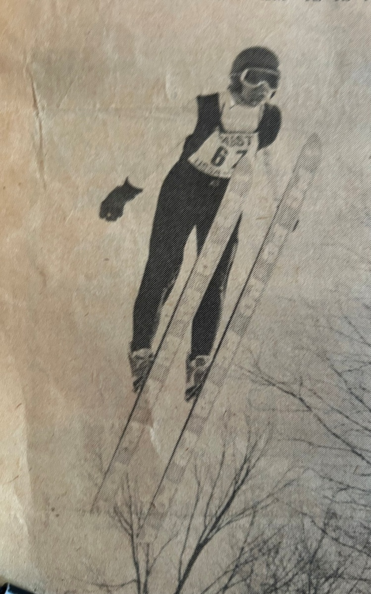
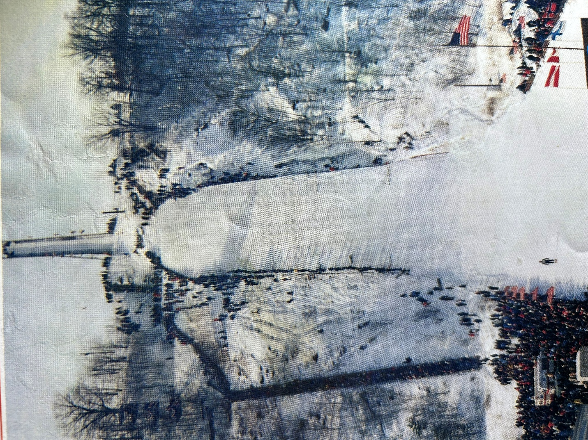

6 The Apex Year
6.1 Going Big
1979 proved to be my apex ski jumping season. It included a ski jumping meet nearly every week from the end of December through the latter half of March. I had graduated fully to the Midwest senior jumping circuit, including the two biggest ski jumping hills in the Midwest, i.e. Westby’s Snowflake and Iron Mountain’s Pine Mountain. (Note: As of this writing, the giant Copper Peak ski flying hill was still on a 30+ year siesta, although it is expected to rise soon from its slumber).
At age 18, it was my last year before aging out of junior class, and therefore, last chance to qualify for the Junior Nationals. It also represented a return from the broken ankle suffered the previous year, which felt fully recovered, although rehabilitation consisted of nothing more involved than usual summer and fall baseball and basketball activities.
By this time, John Kusz and I were the only remaining jumpers from the Gogebic Range regularly attending out of town meets. It was fortuitous that we had a full schedule of out-of-town tournaments since keeping our Wolverine home hill in shape was a real challenge. Other than the two of us, we thoroughly appreciated periodic help from several other club members after each lake effect snow dump. Nevertheless, local practice was at a minimum, and more than ever, we had essentially become weekend tournament ski jumpers.
After decent, but unremarkable results at tournaments in Ely (55m), Madison (60m), and Eau Claire (70m), in early February, it was now my first opportunity to ride a big 90m hill at Westby, Wisconsin. Westby’s historic Snowflake ski club has been around since 1922, although their biggest hill wasn’t built until 1960. Ironically, Westby represented a return to the site of my broken ankle a year earlier on the neighboring 45m hill.
The previous two weekends of intermediate size hills in Wisconsin provided good physical and mental preparation for the large hill, but the 90m Westby Snowflake was a greater class of hill size, speed, and distance. The required step up in mental preparation is greater than that of the physical. A view of the sheer size of the hill can be intimidating upon arrival.
Each ride was preceded by an extra long trudge up the left side of the landing hill, followed by the nearly as long walk up the inrun and scaffold. During the uphill walk, there is a dull fluttering roar as each jumper launches and flies past at 55-60 mph.
One aspect of the Westby hill design that tempers the visual magnitude of hill is that the inrun transition and take-off sections are part of the natural landscape. In that respect, it resembled the Iron Bowl inrun layout, albeit on a 4X scale. The size of the scaffold above ground is huge, but not as big as other large hills whose inruns consist entirely of an above ground scaffold, such as Pine Mountain and Copper Peak.

The first practice ride was a personal milestone. As mentioned, on a small 30m hill, the flagman signals from the knoll that it’s OK for the jumper to go. Preoccupied with getting to the top of the Westby scaffold, I didn’t pay much attention to the red and green lamp system at the Westby take-off until I was in final queue. If it was an early vintage projection TV, it was only missing the blue lamp. This is the big leagues. I had to assume that whomever was handling the lamps was alert.
During practice prior to the tournament, there was offered a choice in what inrun gate to start from. The elite national team and ‘A’ class riders started from one lower gate than the senior ‘B’, Veteran, or less accomplished Junior class jumpers. Anyway, I followed the crowd to the higher gate, while harboring the irrational thought that I might outjump the hill.
The momentous time came when I was next in queue. I had a mental state of ‘Let’s get this over with’. And finally, the distant lamp turned green. Once in the track in my inrun position, it all felt familiar, but the ride to the take-off took a long, so very long time. It was déjà vu of my first full ride on the 30m Iron Bowl years earlier, but this time, it was an eternity. As I accumulated speed down the inrun, I was not fearful, but tense and detached. With the inrun transition past and the take-off table finally approaching, the classic involuntary ‘gulp of anxiety’ happened for the first time in my life.
With pent up anxiety to get it over with, I had to resist the temptation to jump early, which is recipe for disaster on any ski jump and more so on a giant hill. Upon take-off, it was good to finally be in the air. Yeah, it was high. I was passive in my take-off, so I landed sooner and harder than expected, barely clearing the Westby cowpath. It was both exhilarating and embarrassing. I was determined to be more aggressive on my next ride.
On tournament day at a large hill, you will have time for only two or three practice rides in the morning, followed by three tournament rides in the afternoon. And depending on the meet format, the first of the three meet rides may only be a trial ride and not count toward meet results.
The remainder of the two day weekend went OK. I started to get the feel of a large hill and achieve some respectable flights in the 220 - 240 foot range. Nothing competitive on a 90m hill, but at least I belonged on the hill.
The tangible coaching that I received that weekend occurred at the top of the scaffold. While snapping on my skis for another practice ride, Jamie Gaboury, one of my age group peers from Duluth, called out “Craig, don’t crank your knees this time. You’ll get in trouble”. I acknowledged his well meaning advice with a guttural “yep”.
A fundamental ski jumping no-no in flight is bending (or pulling up) your knees, especially on a big hill where mistakes are magnified. Bent knees can lead to skis tips dropping, air pressure getting on top, and a full forward somersault. In flight during the previous ride, I was aware that I had bent my knees slightly and briefly, as I must have intuitively felt that I was starting to pitch forward (Wally would have undoubtedly pointed out that I dropped my head, too), but I recovered and got out of it.
In retrospect, I was so impressed that in the midst of a final queue, a fellow teenage competitor observed a detail of my ride and mentioned it to me out of genuine concern.
Jamie went on to have rich ski jumping career well into his 30’s that included ski jumping tours in Europe and riding Copper Peak. Not surprisingly, he was inducted into the St. Paul Ski Club Hall of Fame in recognition of his leadership on several fronts, such as being a driving force for getting artificial surfaces on their local hills. I am sure that he was a natural coach for up-and-coming jumpers.
Two weeks after the 90m initiation at Westby, it was my last chance to qualify for the Junior Nationals. Fortunately, the qualifying meet was held again at Wolverine, our home hill. During the meet that followed that weekend, I didn’t do anything spectacular, but I lived up to my reputation of being a steady, smooth rider. I finished 8th out of 70 jumpers both days, which was safely within the 17 places allotted to Central Division competitors that year to attend the Nationals.


My distance points knocked on the door of 5th place, but I left too many style points on the table. I approximated the stereotypical Daescher flight style of that era, but if I would have pulled my nicely parallel skis closer together and put my arms tightly at my side, the additional style points could have pulled me up to 5th. Anyway, after three years of not even sniffing qualification due to mediocre skiing or broken bones, it was a relief and a blessing to finally qualify for the Junior Nationals.
6.2 Pine Mountain
Before the Junior Nationals, John Kusz and I met up with Ironwood native Dave Engstrom (aka the Green Hornet so named for his uniquely colored jumping suit) for the 90m Pine Mountain international meet.
Built in the 1930’s, it was (and arguably still is) the most famous North American ski jump with tournaments scheduled every year for mid-February, when weather is generally favorable for big hill jumping. The Pine Mountain hill record surpassed 300 feet by 1960 and stood at 371 feet in 1979. With numerous subsequent hill modifications to the landing and scaffold since 1979, the current Pine Mountain hill record, set in 2018, stands at 472 feet.
The opportunity to ride Pine Mountain had special meaning for me, more than the 90m Westby hill that we had ridden 3 weeks earlier. My first view of big hill ski jumping occurred when I was 8 years old and Dad and I went to spectate at the 1968 Pine Mountain tournament. We watched part of the meet halfway up the side of the humongous landing. The speed and roar of the jumpers flying past was awesome. I couldn’t imagine how anyone could do that. It never occurred to me that I would.
Fast forward to 1979, and there I was. While walking up the 500+ steps of the Pine Mountain landing for a practice jump, I heard someone bellow “Craig, Craig”. It was Todd, my co-conspirator when we naively tried the half- scaffold Iron Bowl stunt 8 years prior. He and his family had moved from Ironwood to Iron Mountain in the mid-70’s and so we lost track of each other. As he ran over, he congratulated me for riding Pine Mountain, while asking if I remembered our jumping experiment. It was a brief, flattering reacquaintance. It would have been nice to reminisce further, but I had to trek up the scaffold and focus on what to do on my next ride, while fixing a mindset that I belonged on The Pine Mountain. I never saw Todd again.
In 1979, before multiple renovations in 2017 and 2020 introduced steel decking and a ceramic inrun track, the old ‘house’ at the top of the scaffold still existed. It provided a unique hill top experience for a jumper in queue. While protecting jumpers from the wind and limiting the view of the surrounding landscape, there was underlying tension somewhere between “Hey, there’s no fooling around here, buddy” and “You’re in the cattle chute now, so there’s no turning back”. Virtually no one was talking.
My first and only Pine Mountain meet was indeed a ‘trill’. Although Dad had to work on Saturday’s first meet day, he was able to be present for Sunday’s final meet day. I didn’t master the hill, but it didn’t conquer me, either. My rides were steady and in a respectable 240 - 250 foot range.
By then, it was simply fun to be steadily soaring through the air for 3 – 4 seconds. And to think that ski flyers setting world records today are in the air for more than 9 seconds! Pine Mountain was a lifetime experience at such speeds and heights, amongst world class jumpers. As I came to a breathless stop on the outrun after one particular ride, there stood one youngster asking for my autograph, which I was honored to oblige. I pretended that it was a normal occurrence for me. I am quite certain that its value has not appreciated, although there is only one!

6.3 Junior Nationals
The March 1979 Junior Nationals were held over two weekends at the Olympic village in Squaw Valley, California. Anchored around the Squaw Valley alpine resort and built for the 1960 Olympics, it was an intimate winter sports venue. We stayed at the former Olympic athlete dormitories. Prior to the Miracle on Ice at the 1980 Olympics, the 1960 Olympics were noteworthy for the underdog United State hockey team winning its first ever gold medal before the Soviets resumed domination for another 20 years.
The 1960 ski jumping gold medal on the 80m hill was won by Germany for the first time, with silver going to Finland. Those Olympics also marked the first time that the Daescher (parallel skis and much less bending at the hip) flight style became the standard. The Nordic combined ski jumping event was held on the neighboring 60m hill. Both jumps were all natural inruns, in scenic evergreen surroundings. After 1960, Olympic ski jumping was expanded to include both Normal (60m) and Large (90m) hill competitions. In step with that, the bigger Squaw Valley ski jump was enlarged to Large hill size and the 1976 NCAA championships were held there.

In March 1979, Squaw Valley was hit with a blizzard the day before we arrived with the Central Division contingent from other Midwest clubs. (As a historical coincidence, snowstorms also delayed the opening ceremonies of the 1960 Olympics). So, the first order of business for us was to dig out the 60m Nordic Combined hill, preparing it for our Junior National meet. With more than two feet of fresh snow, it felt just like home on the range, Gogebic Range that is.
The next morning the hill was deemed ready for jumping, or so we thought. However, with a natural inrun, it wasn’t easy to pinpoint the exact location of the jump. Hold that thought.
After the hill is prepared, the first rider has the responsibility and small honor to set the inrun track in the snow, i.e. break trail. It requires skill in establishing a straight track from inrun start to the take-off which is centered with the landing hill and skis held steadily at slightly less than shoulder width. I am not sure how it happened, but the officials asked me to do it. Perhaps it was because I was one of the more senior competitors and known as a steady big hill rider. Or, maybe it was viewed as a reward, since I was a prominent helper when excavating the hill the day before. Or, maybe I was just standing in the wrong (or right) place at the time. Anyway, I said “sure”.
Poised at the top of the inrun, my fellow Central Division teammate from Ely kept murmuring “We’re starting too high on the hill. We’re starting too high on the hill.” I didn’t know how to argue that point with officials whom I trusted were familiar with the hill. So, I was flagged to go and launched down the uncharted inrun. The new snow felt a little slow, but I carved a nice straight track centered skillfully between the two markers placed at the take-off. Then, everything went awry.
The first problem was staring me in the face as soon as I cleared the knoll. I was in orbit, leaving behind the designed flight trajectory of the hill. We had started too high on the hill! I had as much height as riding the 90m Pine Mountain two weeks earlier, but this was only a 60m hill. Even though I hadn’t jumped with maximum power, my flight path was carrying me well past the bottom of the hill.
The second and more disturbing problem was that I was exiting stage left. I had centered the track between the prescribed markers at the take-off, but the markers had not been aligned between the inrun start and the center of the landing below. I was flying far left of the prepared landing hill, and this time it wasn’t caused by a stiff crosswind.
As I quickly scanned possible landing (or more appropriately crash) sites, I noticed a hill crew staff member far below scampering to safety as I plummeted directly toward him. He had been a half dozen feet off to the side of the landing, but that wasn’t far enough. He had concluded that the garden rake in his hand was no defense against this raptor descending upon him with 8 foot yellow talons.
What a predicament. In normal situations, a ski jumper uses subtle positioning of hands like ailerons to guide flight direction. At great expense to style point in competition, more aggressive adjustments can be made with entire arms, even beyond ‘rolling down the windows’. In this circumstance, no amount of full body contortions was going to divert my flight back to the landing strip.
Except for airplane flight training or aerobatics, stall is what pilots call an undesirable event. Yet, in this situation, a forced emergency stall was the best recourse. By aggressively pulling back on body lean, bending sharply at the waist (aka jack knifing), and getting my legs and skis directly underneath my center of gravity, I mostly defeated forward velocity. Descending awkwardly from the sky, there was little I could do reduce vertical velocity since parachutes are not issued to ski jumpers.
As I was about to meet the ground, it was the first and only time that I closed my eyes. I crashed where some hill slope still remained, so the impact was not as traumatic as it could have been. More so, I landed in the fresh snowbank conveniently created during the previous day’s excavation. After one bounce and roll in the soft stuff, I came to an abrupt halt.
From a flight that lifted off horizontally at 45 mph and descended the vertical height of a 60m landing hill, it was amazing. I was uninjured. As I collected myself and my equipment, hill staff rushed over to determine what medical assistance to provide (unnecessary as it was). However, I soon realized that one of my cherished, new Kneissl skis (just like those of Finnish jumping star Matti Nykaenen’s) had snapped near the tip. The consolation was a broken ski and not a broken bone. The trial and big error event forestalled the first practice that morning for everybody. The jump take-off was cut back and lowered substantially to bring it into conformance.
Still a couple of decades away, the advent of permanently located artificial inrun tracks would have precluded this situation by providing an appropriate take-off speed and more importantly, an inrun track accurately orientated to the rest of the ski jumping hill.
Thankfully, the local ski club found a spare set of Fischer jumping skis for my use the rest of the week. I started practicing the next day. After 2 practice days, the first competitive event was held with team jumping consisting of three and four man teams from the Central, Eastern, and Rocky Mountain regions, respectively. My four man team placed 4th amongst the twelve teams, and although I didn’t do anything spectacular, my individual results were 10th best overall.
My second unique experience occurred during practice between the team jumping days and the two final days of individual jumping competitions. Since it was March, day time temperatures climbed to the high 40’s and low 50’s, before falling below freezing at night. On one of my morning practice jumps, I fell forward onto the icy landing hill. After sliding to a halt, I realized that my left forearm was sporting a six inch raspberry that I have to this day. During hill preparation in the middle of a warm day, the landing hill surface was finalized with skis sidestepping down the hill. The resulting small ridges form a nice human cheese grater as it freezes.
I placed 17th overall during one of the two individual jumping competitions that culminated Junior Nationals week. I never did see the results for the second day, but it was most likely somewhere between 10th and 20th place. The individual winner did ultimately represent the U.S. at the 1984 and 1988 Olympics. Nonetheless, my results were encouraging. The point separation between 5th place and 20th place was modest. I could further rationalize that I was using unfamiliar skis and was disrupted by two different falls.
As a sad postlude not so uncommon in recent decades, the 1979 Junior Nationals were one of the last times that the Squaw Valley ski jumps were used. They were demolished a few years later and the hillsides were converted to speed skiing and snowboarding. Eventually, an express ski lift was installed in that location.
After the last day of competition, I was impressed by Jerry Falk, the Central Division coach, coming to my dormitory room and personally congratulating me on a fine week despite the mishaps. He also offered that USSA would pay for new skis. We later found that to be unnecessary since the skis were still under warranty. When I got back home, I exchanged them at the U.P. retail outlet for jumping skis (yes, such stores used to exist) near Champion, Mi (also home of the five time “All Around Best U.P. Fire Department”).
The second week at Squaw Valley was filled with instructional sessions and dry land training. The coaches were impressed with how I had one of the highest vertical leaps measured in the gym. Yes, I had heard that before.
A welcome diversion was being able to go alpine skiing one day on Squaw Valley Mountain. For a Yooper who had never ventured beyond the upper Midwest until that trip, the week in general and that particular day, was a real treat. Whereas the maximum elevation change at U.P. alpine hills is a measly 650 feet, the 2700 foot elevation change from top to bottom of Squaw Valley was another scale. The picturesque view from the tram ride and the length of the ski runs were awesome. Even for a fit 18 year old, my leg muscles were burning when skiing without pause from top to bottom of the mountain. The climate changed from blustery, cold, and icy conditions at the top to sunny, mid-50’s and soft snow at the bottom. Just as noticeable was that ski attire changed dramatically, as if by magic, from winter parkas, ski pants, and goggles at the mountain top to shorts and bikinis at the bottom. Thus ended the apex year of my ski jumping career.